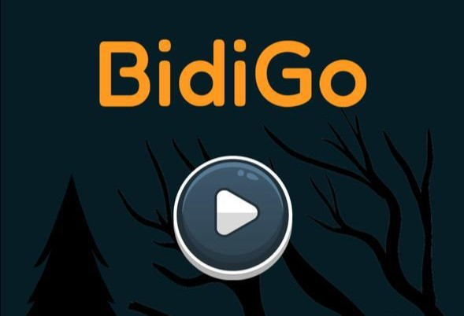
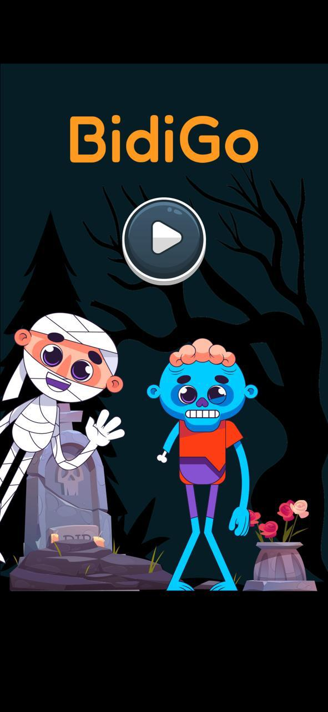
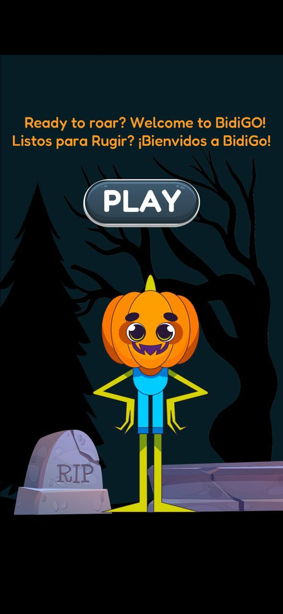
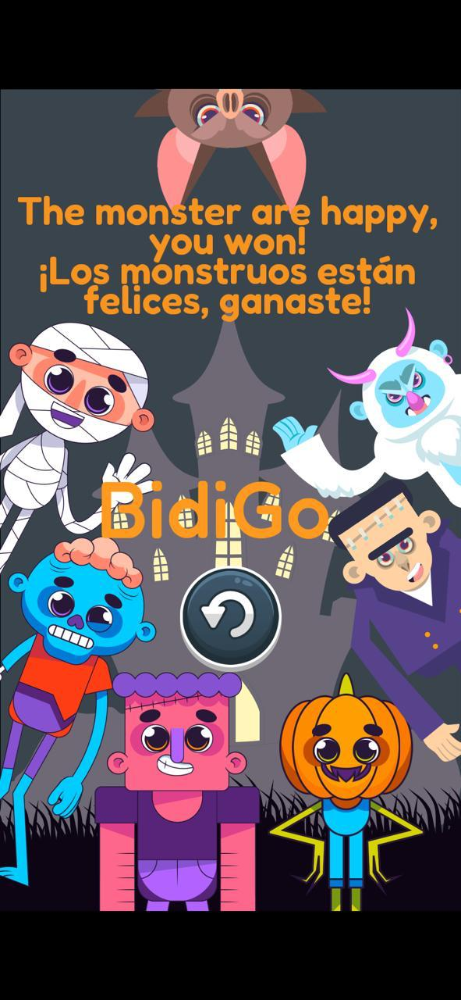

Diseño de juego
Juego serio de idiomas

Una propuesta de juego con retos de inglés y español para niñas y niños de 7 a 12 años.
Sobre el proyecto
El proyecto combina aprendizaje de idiomas y dinámicas de juego en una experiencia dirigida a estudiantes de primaria.
Sus retos se centran en inglés y español, con el propósito de practicar ambos idiomas de una manera participativa.



